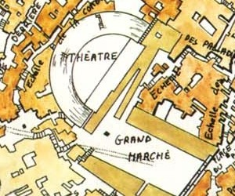

Le Théâtre
Les autorités de Laelith ont vite compris, comme nombre d'autres villes, qu'une population tranquille était une population occupée. La cité a donc construit un immense centre de divertissement : le Théâtre, sur la terrasse de la Prospérité. Celui-ci accueille des activités très variées, allant des combats de gladiateurs aux joutes philosophiques, en passant par les spectacles de cirques et les représentations théâtrales.
Haut de plus de 40 mètres, en forme de demi-cercle d'un diamètre de près de 300 mètres, les gradins peuvent accueillir facilement 30 000 spectateurs. Les prix varient beaucoup en fonction du spectacle et de l'horaire, et il existe des passes à la semaine, au mois ou à l'année, chacun pour un type d’événement. En contrebas des gradins (la première rangée se trouve 9 mètres au-dessus) se trouve l'arène, en forme de demi-cercle elle aussi. Elle est en terre battue et recouverte d'immenses toiles elles-mêmes recouvertes de sable. C'est là qu'ont lieu les combats de gladiateurs par exemple, et certains numéros de cirque. L'enceinte de l'arène est en bois d'if imperméabilisé. Un savant mécanisme permet de la remplir jusqu'à 2 mètres d'eau pour certains événements, et les toiles permettent d'enlever rapidement le sable dans ce cas. Au fond, adossée aux bâtiments des coulisses, se situe la scène. Surélevée de près de 3 mètres par rapport à l'arène, mais en contrebas des gradins elle aussi, elle est également en bois. De nombreuses trappes et autres mécanismes sont installés sous la scène, pour les numéros de magie par exemple.
Le théâtre comporte 16 entrées à intervalles réguliers dans sa circonférence, 2 portes sur les côtés pour le personnel, ainsi qu'un accès spécial pour le Roi-Dieu et sa cour au centre. Sa majesté dispose en effet d'une tribune spéciale au milieu, en bas des gradins. Outre cette zone à part, les gradins sont séparés en 5 sections. Les premières rangées près de l’arène, en marbre, sont réservées aux prêtres. La seconde partie est composée de 14 rangées destinées aux nobles, aristocrates et officiers de hauts rangs. Ensuite vient la troisième section, pour les bourgeois, les commerçants, etc. Les quatrième et cinquième sont celles du peuple, la différence entre les deux n'étant qu'une question de prix.
Personnel
APPROCHE
La guilde des courtisanes est actuellement en train de mettre au point un plan pour approcher Gylop le chanteur dans le but de pouvoir influer sur ses choix, car ce dernier est devenu un homme très influent dans l'univers artistique du royaume.
Lorsque le Roi-Dieu va au théâtre c’est sa garde personnelle qui s'occupe de la surveillance des lieux, et les armes sont interdites à l'intérieur de l'enceinte. Mais en temps normal, c'est le poste de garde du théâtre qui est chargé de la sécurité, et l'entrée est plutôt libre, tant qu'on s'acquitte du prix du billet.
Les comédiens, jouteurs, gladiateurs et autres ne font pas partie du personnel du théâtre, par contre le bâtiment compte nombre de concierges, vendeurs, caissiers, ouvriers mécaniciens, décorateurs. Bref, tous ceux qui ne sont pas sur la scène, mais permettent au théâtre de fonctionner. L'administration du théâtre est confiée au temple du Nuage, qui nomme un régisseur tous les quatre ans.
Ornicar Lamain. C'est l'actuel régisseur, un demi-elfe qui a passé la cinquantaine, originaire de la cité. C'est lui qui fixe les prix d'entrée de chaque spectacle.
Gylop le chanteur
Hotoil. Responsable de la sécurité, rahel du poste de garde du théâtre, humain de 32 ans.
Gylop le chanteur. Hiérarchiquement sous le régisseur, c'est le responsable artistique du théâtre, l'homme qui auditionne les artistes et compose le programme des saisons. C'est assurément un des hommes les plus influents de la cité dans le domaine artistique.
Frukac Atol. C'est le responsable du personnel. Il loge au théâtre.
Rectul. Vieux prêtre du Nuage de plus de 60 ans, il est le coordinateur des affaires religieuses du théâtre. Il est très apprécié car fait preuve d'une grande impartialité entre tous les cultes.
Horaires
Suivant le régisseur, le calendrier d'une saison varie quelque peu. Mais voici à titre de référence les horaires actuels, conçus afin de répondre aux diverses attentes des citoyens et touristes de la cité sainte.
| Tierce (de 9h à 12h) | Conférences et débats religieux | Gratuit |
| Sexte (de 12h à 15h) | Conférences et enseignement sur divers thèmes comme l'art, l'histoire, ... | Payant |
| None (de 15h à 18h) | Répétition des spectacles, entraînement des gladiateurs, ... | Non ouvert au public |
| Vêpres (de 18h à 21h) | Représentations d'artistes amateurs ou débutants (troubadours, bardes, ménestrels, comédiens, ...) |
Don volontaire si le spectacle plaît |
| Tierce (de 9h à 12h) | Conférences et débats religieux | Gratuit |
| None (à partir de 15h) | Grand Spectacle (combat de gladiateurs, défilé, cirque, jeux, ...) | Payant |
| Vêpres (à partir de 21h) | Représentations d'artistes reconnus | Payant |
Dates clefs de l'histoire du théâtre
- 431 à 435 : Construction des sections 1 et 2
- 518 : Construction de la 3ème section
- 749 : Création du poste de garde du théâtre
- 844 : Construction des sections 4 et 5
- 933 : Ajout du système hydraulique
- 1044 : Grand incendie dans la partie arrière du théâtre (coulisses)
- 1124 : Rénovation